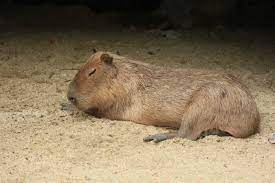
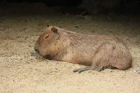
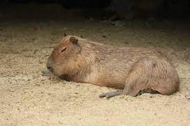

Rodzaj obejmuje gatunki występujące w Ameryce Środkowej (Panama) i Południowej (Kolumbia, Wenezuela,
Gujana, Brazylia, Ekwador, Peru, Boliwia, Paragwaj, Argentyna i Urugwaj).
T.S. Palmer. Index Generum Mammalium: a List of the Genera and Families of Mammals.
„North American Fauna”. 23, s. 1–984, 1904. (ang.).

Przypisy
Hydrochoerus, [w:] Integrated Taxonomic Information System [online] (ang.).
M.J. Brisson: Regnum animale in classes IX. distributum, sive, Synopsis methodica: sistens generalem
animalium distributionem in classes IX, & duarum primarum classium, quadrupedum scilicet & cetaceorum,
particularem divisionem in ordines, sectiones, genera & species: cum brevi cujusque speciei descriptione,
citationibus auctorum de iis tractantium, nominibus eis ab ipsis & nationibus impositis, nominibusque
vulgaribus. Lugduni Batavorum: Theodorum Haak, 1762, s. 80. (łac.).
M.T. Brünnich: Zoologiae fundamenta praelectionibus academicis accommodata. Grunde i dyrelaeren. Hafniae:
Apud Frider. Christ. Pelt, 1772, s. 44. (łac.).
J.Ch.P. Erxleben: Systema regni animalis per classes, ordines, genera, species, varietates: cvm synonymia
et historia animalivm: Classis I. Mammalia. Lipsiae: Impensis Weygandianis, 1777, s. 191. (łac.).
C.S. Rafinesque: Analyse de la nature, or, Tableau de l'univers et des corps organisés. Palerme: Aux dépens
de l'auteur, 1815, s. 56. (fr.).
J.E. Gray. On the Natural Arrangment of Vertebrose Animals. „The London Medical Repository”. 15, s. 304, 1821. (ang.).
J.E. Gray. An Outline of an Attempt at the Disposition of Mammalia into Tribes and Families, with a List of
the Genera apparently appertaining to each Tribe. „Annals of Philosophy”. New Series. 10, s. 341, 1825. (ang.).
V.M. Moussy: Description géographique et statistique de la Confédération Argentine. T. 2. Paris: F. Didot, 1860, s. 13. (hiszp.).
E. Liais: Climats, géologie, faune et géographie botanique du Brésil. Paris: Garnier Frères, 1872, s. 545. (fr.).
J.A. Allen. Mammals collected on the Roosevelt Brazilian Expedition, with field notes by Leo E. Miller.
„Bulletin of the American Museum of Natural History”. 35 (30), s. 568, 1916. (ang.).
C. Rusconi. Tercera noticia sobre los vertebrados fósiles de las arenas puelchenses de Villa Ballester.
„Anales de la Sociedad Científica Argentina”. 117, s. 21, 1934. (hiszp.).
A. Hollande & A. Batisse. Contribution à l'étude des infusories parasites du coecum de l'hydrocheire
(Hydrocheirus capybara L.). I. La famille des Cyclo-posthiilidae. „Memórias do Instituto Oswaldo Cruz”. 57, s. 1, 1959. (fr.).
Nazwy polskie za: W. Cichocki, A. Ważna, J. Cichocki, E. Rajska-Jurgiel, A. Jasiński & W. Bogdanowicz: Polskie
nazewnictwo ssaków świata. Warszawa: Muzeum i Instytut Zoologii PAN, 2015, s. 289. ISBN 978-83-88147-15-9. (pol. • ang.).
C.J. Burgin, D.E. Wilson, R.A. Mittermeier, A.B. Rylands, T.E. Lacher & W. Sechrest: Illustrated Checklist of the
Mammals of the World. Cz. 1: Monotremata to Rodentia. Barcelona: Lynx Edicions, 2020, s. 552. ISBN 978-84-16728-34-3. (ang.).
T. Lacher, Jr: Family Caviidae (Cavies, Capybaras and Maras). W: D.E. Wilson, T.E. Lacher, Jr & R.A. Mittermeier:
Handbook of the Mammals of the World. Cz. 6: Lagomorphs and Rodents I. Barcelona: Lynx Edicions, 2016, s. 436–437. ISBN 978-84-941892-3-4. (ang.).
D.E. Wilson & D.M. Reeder (red.): Hydrochoeris. [w:] Mammal Species of the World. A Taxonomic and Geographic
Reference (Wyd. 3) [on-line]. Johns Hopkins University Press, 2005. [dostęp 2019-10-29].
Palmer 1904, s. 334.
cap·y·ba·ra. The American Haritage. Dictionary of the english language. [dostęp 2023-03-07]. (ang.).
Palmer 1904, s. 158.
E.C. Jaeger: Source-book of biological names and terms. Wyd. 1. Springfield: Charles C. Thomas, 1944, s. 253. (ang.).
N. Upham, C. Burgin, J. Widness, M. Becker, C. Parker, S. Liphardt, I. Rochon & D. Huckaby: Higher Taxonomy.
[w:] ASM Mammal Diversity Database (Version 1.10) [on-line]. American Society of Mammalogists. [dostęp 2023-03-07]. (ang.).
R.D.E. MacPhee, R. Singer & M. Diamond. Late Cenozoic land mammals from Grenada, Lesser Antilles Island-Arc.
„American Museum Novitates”. 3302, s. 10, 2000. (ang.).

 
